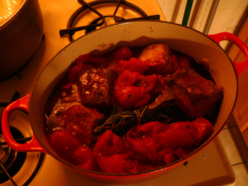

Perfect short ribs
Perfect short ribs

Two days and five hours of braising later, the short ribs pictured above turned into the best dinner I’ve ever made. FreshDirect has bone-in short ribs for about $3 per pound right now—probably more than they should cost but still a good deal. I bought four pounds and loosely followed Mom’s method for pot roast.
I intended to eat the dish last night, but when we nailed down another couple to eat with us tonight, I decided to refrigerate and then reheat them, which is better for such a stew anyway. So yesterday, I dredged them in flour and seasonings, browned them well, browned a few chopepd onions, and then stewed it all for three hours in plenty of red wine and a can of tomatoes, along with garlic and a generous bunch of rosemary and thyme. After letting the pot cool on the stovetop (which takes forever in my new Dutch oven!), I stuck it in the fridge.
Before reheating them tonight, I spent a few minutes prying off the centimeter-thick plank of fat that covered the surface. This may be the chief advantage to the two-part cooking method. I replaced the lost liquid with wine, added a few chopped carrots and a handful of chopped niçoise olives, and cooked them for another two hours in the oven. The finished ribs were as close in texture to butter as meat can be—quite similar to the puréed potatoes and applesauce on the plate with them, in fact, with nothing but the soft crunch of carrots and olives to break up the wonderful, velvety monotony.
Comments
I’ve gone all drooly and I’m still off the meat wagon. They look delish.
Now you’ve got to try making em Vietnamese style with a fish-sauce based caramel sauce. It’ll stink up your little apartment for sure, but man, that’s eatin!
Milo says hello.
I don’t know what I covet more, those ribs or that beautful dutch oven. I may shoot over to B’way Panhandler and pick up one of my own.
That dinner looks delish. Your guests are lucky!
These have definitely gone on the “to make immediately” list. A November push to save money for Christmas presents has me digging into the slow-cooking meat section of the grocery.
Although I often forget to make dishes such as these in advance enough to skim off the cooled fat, every time I do remember, I promise to never forget again. It’s hard to believe that all that goopy stuff can be done away without changing the dish at all for the worse. It’s already done its work.
Looking forward to other masterpieces with inexpensive cuts of meat.
~Sarah
It’s always a good idea to cool short ribs overnight because they do tend to be so fatty. Poppy is craving these! I’m putting a short rib dinner on the menu for when we get home from Spain.
Thank you, everyone! You’re all so sweet! Nice to hear from you, Ayun. Please send our love to little Milo.
Thanks for visiting and commenting, foodandpaper. Feel free to clue us in to whatever fabulous inexpensive meat you come across. People can keep their fancy wagyu steaks—I’ll take a pork knuckle any day.
By the way, Mom, your gravatar is alive and well.
This gravatar business is the last straw for Safari! That has been my browser of choice and all my bookmarks are on there, but I just checked the blog on Firefox and there are the gravatars! I’m still not seeing any on Safari at all. I also can’t ever comment on Colin’s blog in Safari because the fields show up as white on white and you can’t see what you’re typing.
Short ribs are favorites of mine and these look and sound particularly delicious.
I’m impressed that you can get them for $3 a pound. At local grocery stores they are always $3.99 a pound.
Speaking of gravatars, I’ve just noticed there’s now an ugly default gravatar that shows up, instead of just an empty spot… ewwww.
Add a comment